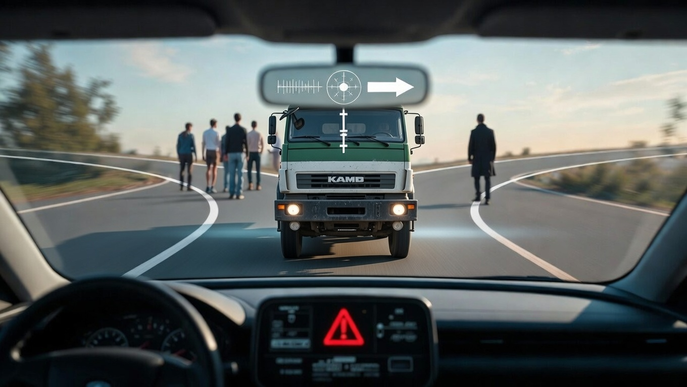

Трудные решения в реальном мире часто ставят нас перед моральными дилеммами, где любой выбор несёт жертвы.
Классический пример — «проблема тележки» в версии автономного автомобиля: кого спасти — владельца машины или большее число людей?
Реальный аналог — кадры из фильма «Глаз в небе»: оператор дрона должен решить — уничтожить террористов, жертвуя случайной девочкой, или ничего не делать, допустив гибель сотен. Это уже не философия, а повседневная реальность.
Такие ситуации отражают конфликт в мозге: рациональный расчёт vs эмпатия, контроль vs сострадание, логика vs чувства.
В мозге работают разные дофаминовые системы:
Когда системы конфликтуют, возникает знакомое: «Я хочу — но понимаю, что это разрушает меня».
Раньше считалось, что воля — ограниченный ресурс (эксперимент с редиской и печеньем). Но современные исследования (после 2010-х) показывают: эффект истощения воли воспроизводится не всегда.
Самоконтроль слабеет сильнее при:
Настоящая самодисциплина — это взаимодействие мотивации, эмоций, энергии, глюкозы, дофамина и среды. Привычки + терапия + нейрорегуляция делают её устойчивой.
Мозг не «чувствует» себя напрямую. БОС даёт зеркало: обратную связь по
Человек учится видеть и управлять состояниями: фокус, контроль, импульсивность, тревога, устойчивость.
Новый контур: состояние → сигнал → осознание → управление → закрепление.
Зависимость — это перепрошивка мозга, а не слабость характера:
«Просто перестань» почти никогда не работает. БОС помогает:
Мета-анализ Wan et al. (Addiction, 2026) — 17 RCT, эффект Hedges’ g ≈ 0.85 (большой) для substance use disorders, особенно при аудио-обратной связи, после 20+ сессий, лучше в комбинации с психотерапией. Для поведенческих зависимостей эффект умеренный, но положительный.
БОС не заменяет, а усиливает:
Будущее — не подавление импульсов, а тренировка нервной системы.
БОС — это:
Мы выбираем не между «добром и злом», а между разными нейросистемами внутри себя.
БОС позволяет их увидеть, почувствовать, научиться управлять и перестроить баланс.
От «Я борюсь с собой» → к «Я тренирую свою нервную систему»
← Главная